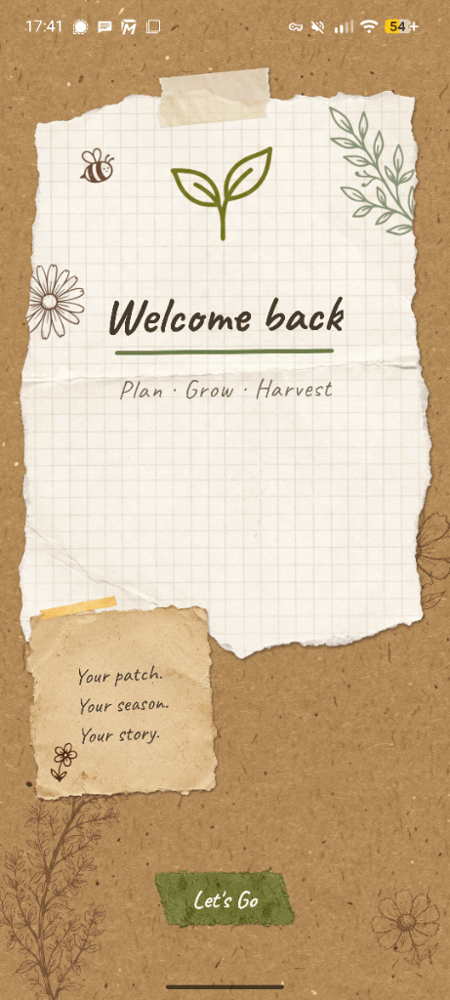
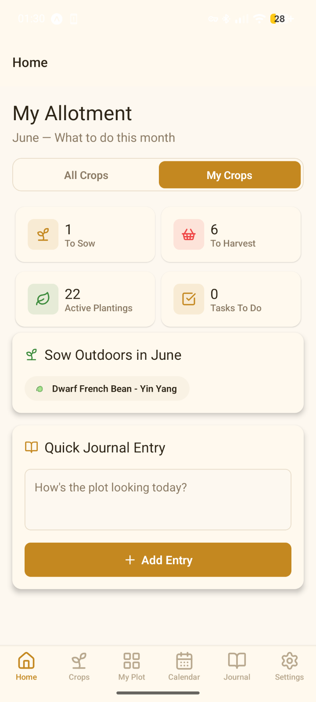
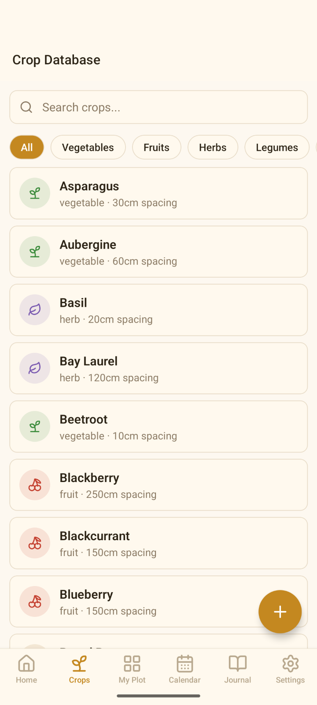
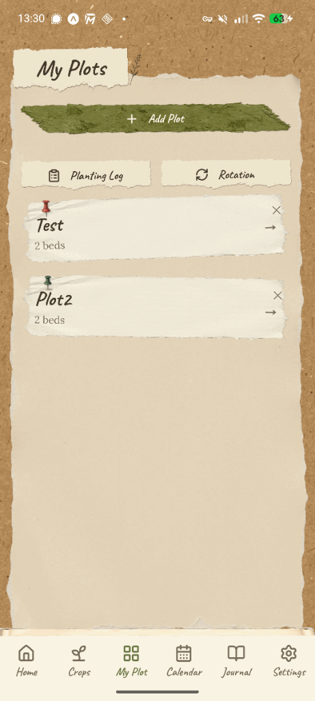
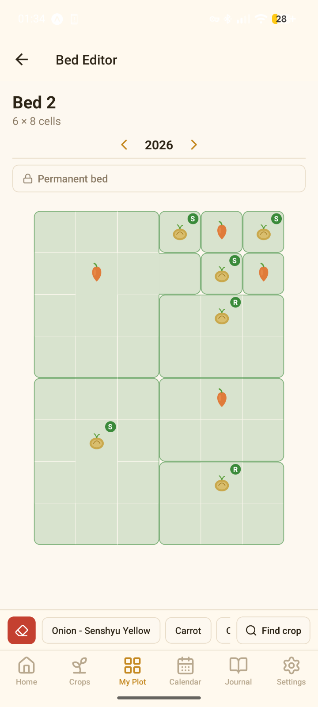
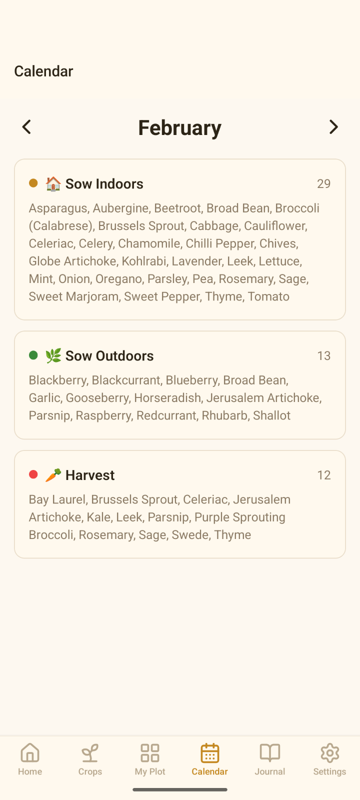

February 2026
First up: a small visual refresh
The first update I’m planning is a small graphical and UI polish pass. Nothing too fussy — just some friendlier details, clearer little touches, and a bit more character throughout the app.
Portas Productions • A one-person app studio
A simpler way to plan, grow & track your plot
I made My Allotment to feel practical, calm, and easy to use — a gardening companion for UK growers that helps you plan beds, track plantings, and keep on top of crop rotation without accounts, ads, or clutter.
Built independently, updated thoughtfully, and designed to work fully offline.

Sowing times, spacing, companions, and harvest notes for vegetables, fruits, herbs, legumes, and flowers.
A quick month-by-month guide for what to sow, transplant, and harvest.
Map out your beds with a simple tap-to-assign grid and helpful companion planting warnings.
RHS-based rotation tracking with year-over-year history and gentle reminders as you go.
Track each planting from seed to harvest with status updates and estimated harvest dates.
Keep a simple record of the season with photos and notes.
A personal note
I build small, useful apps one at a time, with an emphasis on clarity, privacy, and making things that feel nice to use. My Allotment is the first app I'm putting out into the world under Portas Productions, and I’m hoping it’ll be the first of a few.
If this app helps you enjoy your plot a bit more or stay a bit more organised through the season, then it’s doing exactly what I hoped it would.
— Jay
Updates
Small notes on what’s coming next for My Allotment and future Portas Productions apps.
February 2026
The first update I’m planning is a small graphical and UI polish pass. Nothing too fussy — just some friendlier details, clearer little touches, and a bit more character throughout the app.





My Allotment does not collect, store, or transmit any personal data.
All your data — plots, plantings, journal entries, and photos — stays on your device and never leaves it. I don't use analytics, tracking, or ads.
Your data is yours alone.
Last updated: February 2026